도쿄 가는 길
도쿄 가는 길
 홈
홈🗺️ 신주쿠구 지도
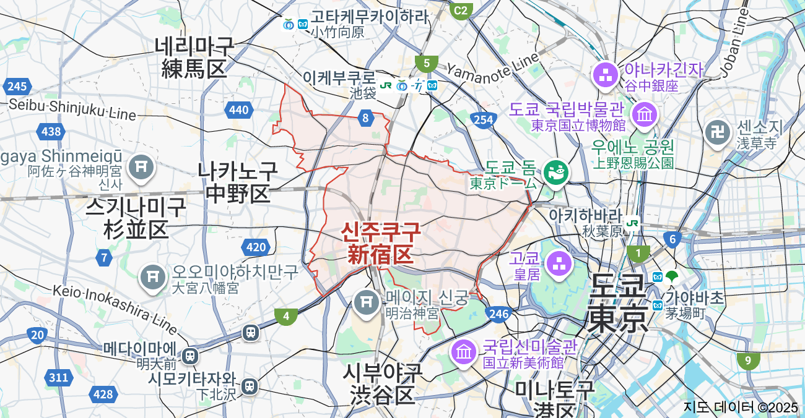신주쿠 교엔

- 주소: 11 Naitomachi, Shinjuku City, Tokyo 160-0014 일본
- 운영시간: 09:00 ~ 16:30
- 휴무일: 월요일
- 입장료: 500엔
도심 속 엄청난 규모를 자랑하는 공원
도쿄도청 전망대

- 일본 〒163-8001 Tokyo, Shinjuku City, Nishishinjuku, 2 Chome-8-1 도쿄 도 청사 45F
- 운영시간: 09:30 ~ 17:00
- 휴무일: 2,4주 월요일 & 공휴일
- 입장료: 무료
도쿄 청사에 무료로 즐길 수 있는 전망대
이세탄

- 3 Chome-14-1 Shinjuku, Shinjuku City, Tokyo 160-0022 일본
- 영업시간: 10:00 ~ 20:00
1886년 기모노 상점으로 시작해서 전세계 백화점 매출 1위를 기록한 신주쿠 본점
골든가이

- 일본 〒160-0021 Tokyo, Shinjuku City, Kabukicho, 1 Chome-1-6 あかるい花園 五番街
- 영업시간: 대부분 가게들이 17시 이후 오픈
축제 분위기가 물씬 풍기는 인기 도심 골목으로 선술집이 많은 것으로 유명
고질라헤드
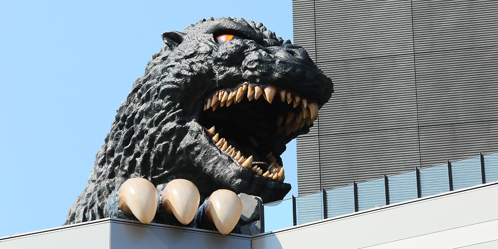- 1 Chome-19-1 Kabukicho, Shinjuku City, Tokyo 160-0021 일본
고질라 머리가 있는 빌딩으로 신주쿠의 랜드마크
🗺️ 시부야구 지도
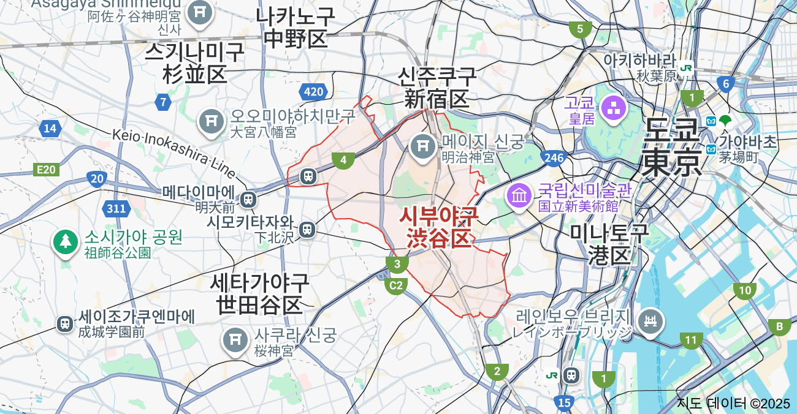스크램블 교차로
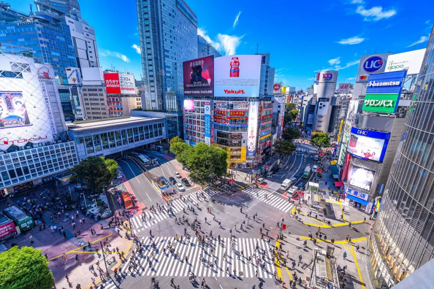- 2 Chome-24-12 Shibuya, Tokyo 150-0002 일본
시부야 역 하치코 출구에서 여러 방향으로 한 번에 1000명 이상이 건널 수 있도록 만들어진 시부야의 현관
시부야 스카이
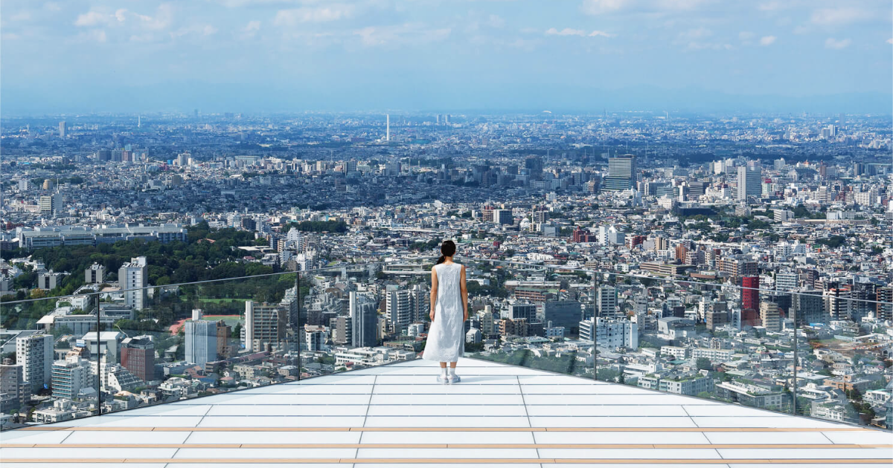- 일본 〒150-6145 Tokyo, Shibuya, 2 Chome-24-12 スクランブルスクエア 14階・45階 46階・屋上
- 영업시간: 10:00 ~ 22:30
- 전망대 입장료: 2,700엔
도쿄의 스카이라인과 풍경을 상공 229m에서 360도 파노라마로 감상할 수 있는 전망대
오모테산도

- Jingumae, Shibuya 150-0001 Tokyo Prefecture
아트, 건축, 고급 패션의 거리로, 도쿄의 샹젤리제 거리
요요기 공원
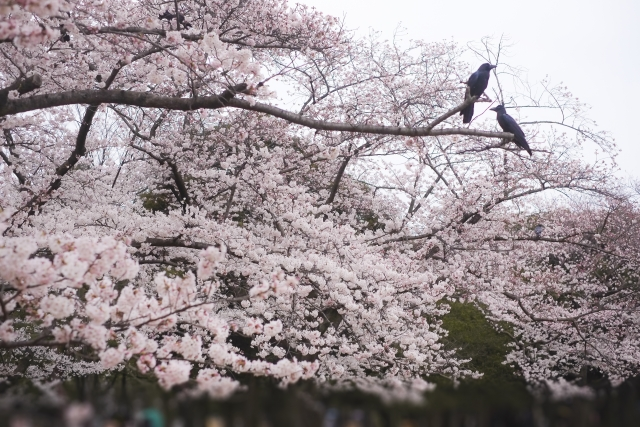- 2-1 Yoyogikamizonocho, Shibuya, Tokyo 151-0052 일본
조깅, 피크닉 및 야외 활동을 하기에 좋은 도쿄에서 제일 큰 도시 공원
메구로 강
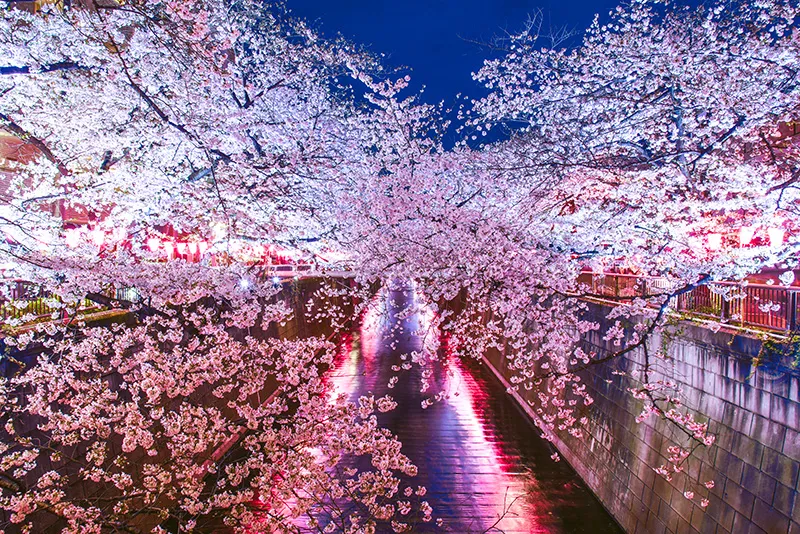- 2-3-14, Nakameguro, Meguro 153-0061 Tokyo Prefecture
명실상부 도쿄의 벚꽃 명소로 손꼽히는 길
다이칸야마
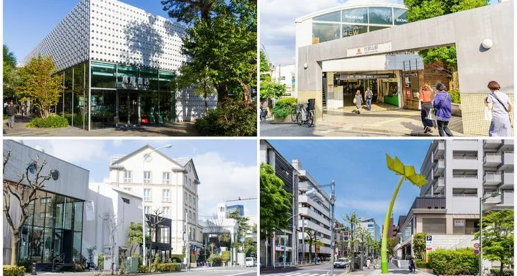- 17-5 Sarugakucho, Shibuya 150-0033 Tokyo Prefecture
- 츠타야 서점 영업시간: 09:00 ~ 22:00
츠타야 서점을 중심으로 형성된 힐링 할 수 있는 명소
하라주쿠
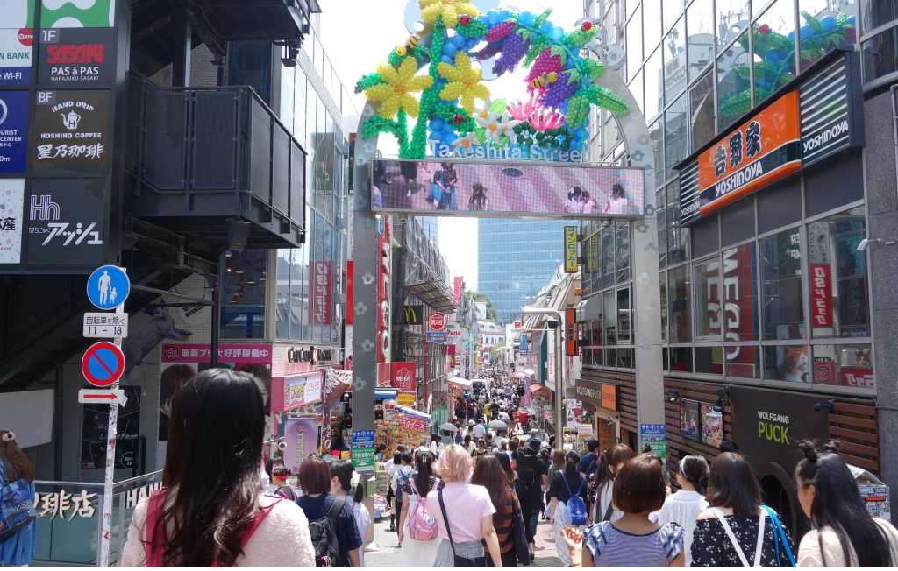- 1 Jingumae, Shibuya 150-0001 Tokyo Prefecture
- 츠타야 서점 영업시간: 09:00 ~ 22:00
카와이 문화의 발신지로 코스프레 문화가 있는 거리
🗺️ 치요다구 지도
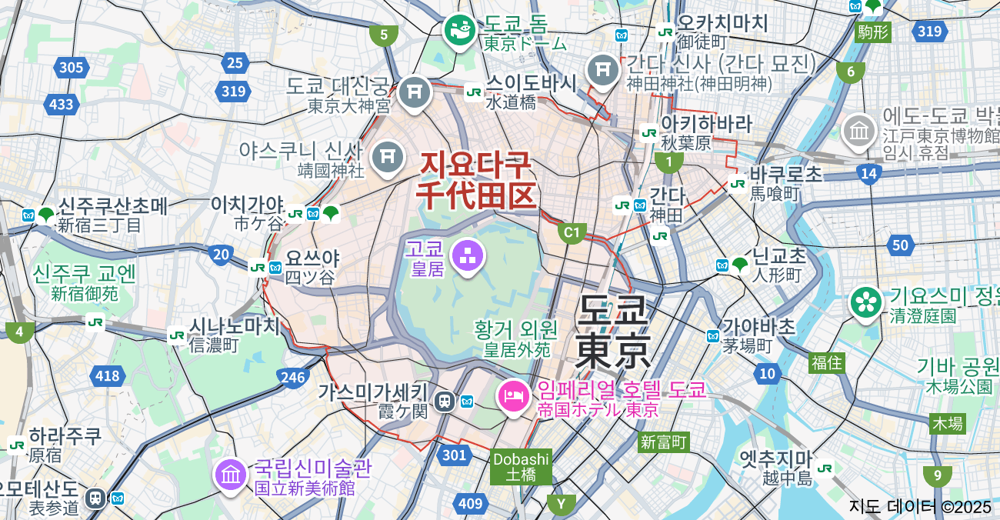황궁
- 1-1 Chiyoda, Chiyoda City, Tokyo 100-8111 일본
- 운영시간: 09:00 ~ 11:15 / 13:30 ~ 14:45
- 휴무일: 월요일, 일요일
천황과 황후의 거처이며 참관 신청을 하면 누구나 입장 가능
💡참관 방법: 고쿄 기쿄몬 앞에서 1회당 당일 접수 300명 (오전/오후) & 예약도 가능
히에 신사
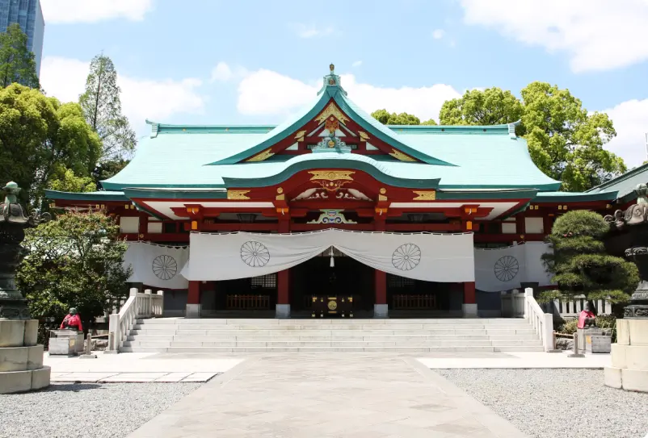- 2 Chome-10-5 Nagatachō, Chiyoda City, Tokyo 100-0014 일본
- 운영시간: 06:00 ~ 17:00
도쿄의 수호신을 모시는 신사로 매년 6월에 열리는 일본 3대 축제 중 하나인 산노 축제와 시선을 끄는 곳
아키하바라
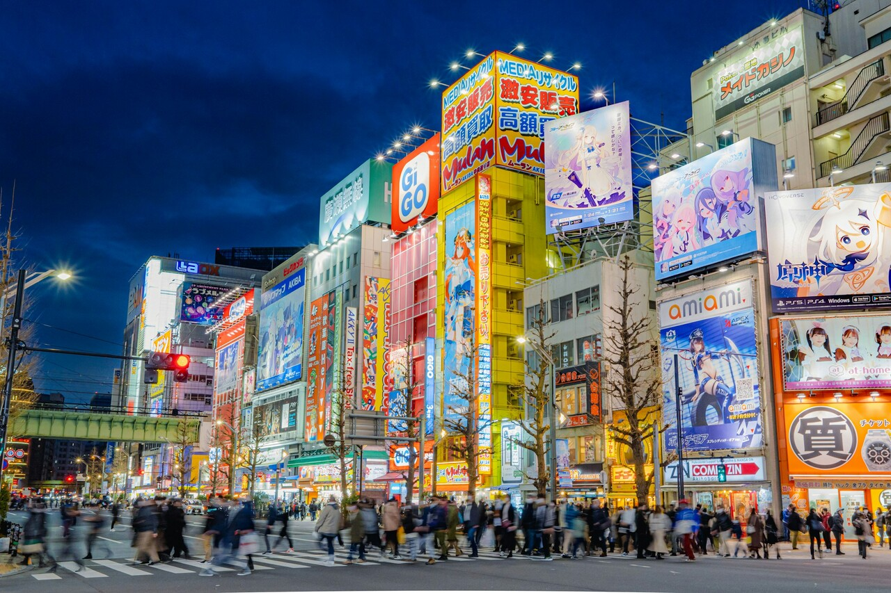- Sotokanda, Chiyoda 101-0021 Tokyo Prefecture
만화, 애니메이션 굿즈와 전자 상점이 어우러진 관광 명소
🗺️ 미나토구 지도
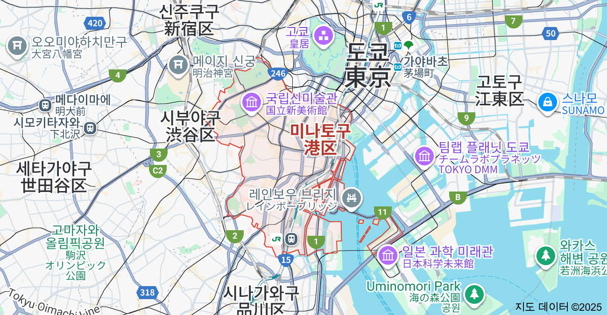롯폰기 힐즈
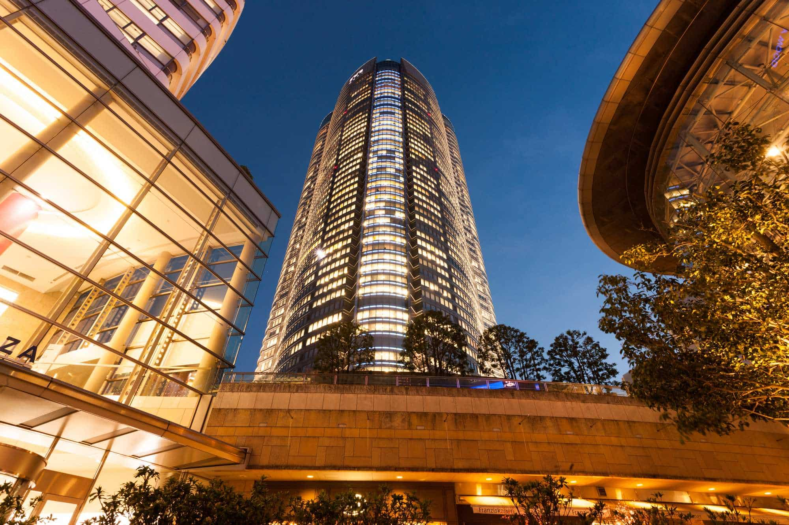- 6 Chome-10-1 Roppongi, Minato City, Tokyo 106-6108 일본
- 영업시간: 11:00 ~ 23:00
- 전망대 입장료: 1,800엔
사무실, 레스토랑, 미술관이 들어선 복합단지와 꼭대기에 전망대가 자리한 초고층 건물
도쿄 타워
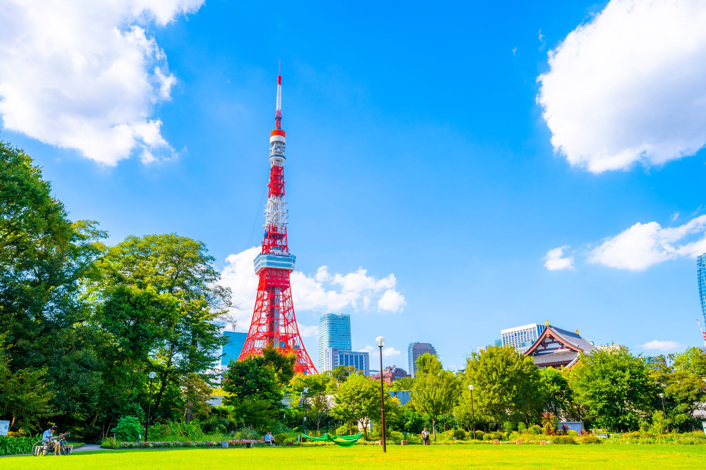- 4 Chome-2-8 Shibakoen, Minato City, Tokyo 105-0011 일본
- 영업시간: 09:00 ~ 23:00
- 전망대 입장료: 1,500엔(150m, 메인 덱) / 3,300엔(400m, 탑 데크)
에펠탑을 연상시키는 타워로 지금도 활발히 사용 중인 방송 시설이자 전망대, 복합 쇼핑 센터도 있는 도쿄의 랜드마크
🗺️ 다이토구 지도
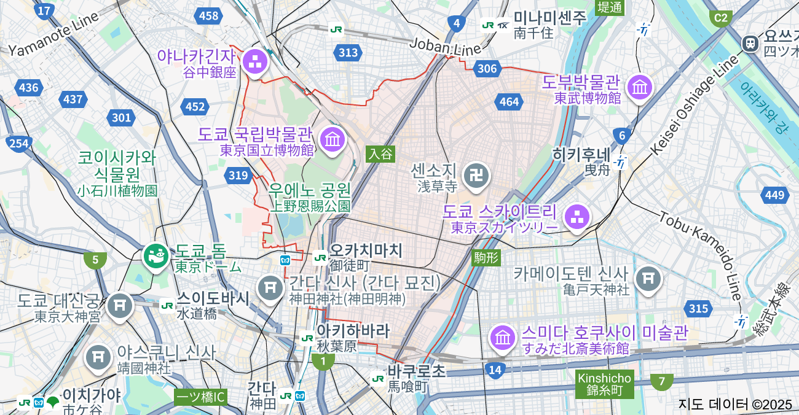아사쿠사&센소지

- 2 Chome-3-1 Asakusa, Taito City, Tokyo 111-0032 일본
- 운영시간: 06:00 ~ 17:00
센소지 텐가타이사와 아사쿠사 신사, 전통 시장 등의 매력을 가진 지역
센소지는 도쿄에서 가장 오래되었으며 645년에 완공된 이 사원은 자비의 여신을 기리기 위해 세워짐
우에노 공원

- Uenokoen, Taito City, Tokyo 110-0007 일본
- 운영시간
- 입장료
인기 있는 도시공원에 넓은 산책로, 호수, 동물원, 국립박물관이 있는 명소
우에노 공원 운영시간: 05:00 ~ 23:00
우에노 동물원 운영시간: 09:30 ~ 17:00
도쿄 국립박물관 운영시간: 09:30 ~ 17:00 (월 휴무)
우에노 동물원 입장료: 600엔
도쿄 국립박물관 입장료: 1,000엔
야나카긴자
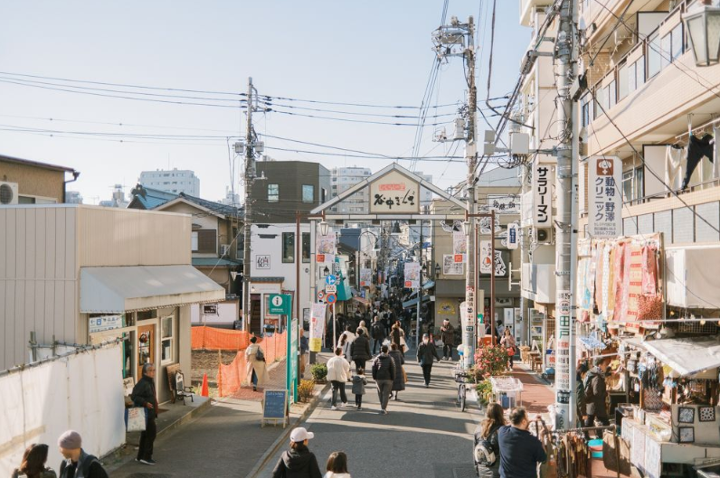- 3 Chome-13-1 Yanaka, Taito City, Tokyo 110-0001 일본
1950년대부터 현재까지 운영 중인 전통 상점가로 도쿄 고양이 마을로 유명함
🗺️ 주오구 지도
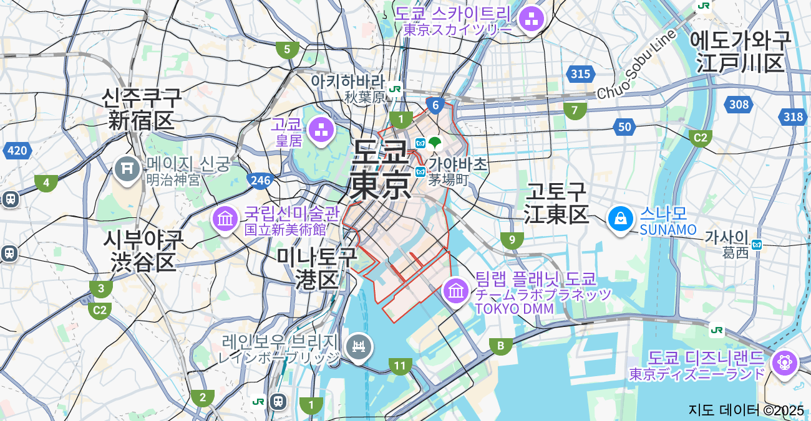긴자

- 〒104-0061 도쿄도 주오구
- 주요 시설 영업시간: 10:00 ~ 20:00
에도시대에 은화 주조소 터에 조성된 긴자는 다른 곳에는 없는 세련된 분위기와 역사를 느낄 수 있는 거리
츠키지 시장
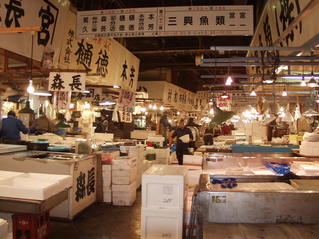- 4 Chome-14 Tsukiji, Chuo City, Tokyo 104-0045 일본
- 영업시간: 06:00 ~ 14:00
- 휴무일: 일요일, 수요일, 공휴일
도쿄의 부엌이라고 불리우는, 다양한 해산물과 맛집의 시장
🗺️ 스미다구 지도
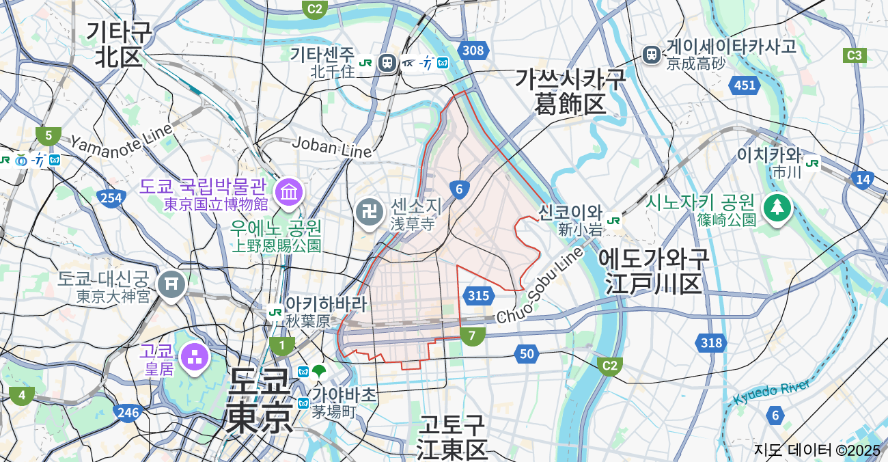스카이트리
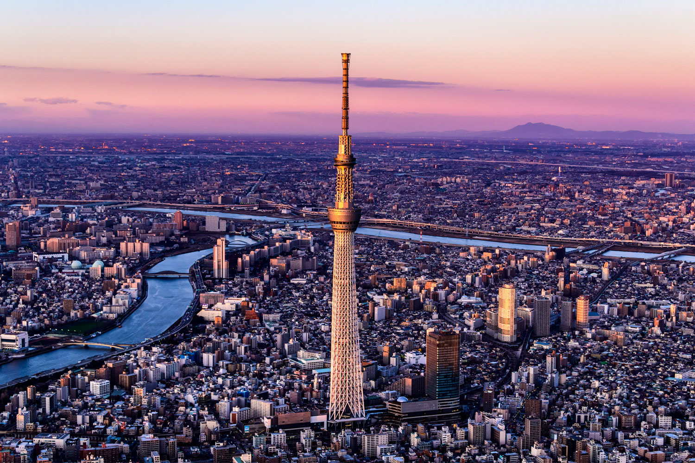- 1 Chome-1-2 Oshiage, Sumida City, Tokyo 131-0045 일본
- 영업시간: 10:00 ~ 22:00
- 입장료: 평일기준 2,100엔(덴보테크, 350m) / 3,100엔(덴보회랑, 450m)
360도 전망을 자랑하는 곳이 있는 세계에서 가장 높은 독립형 전파탑
🗺️ 고토구 지도
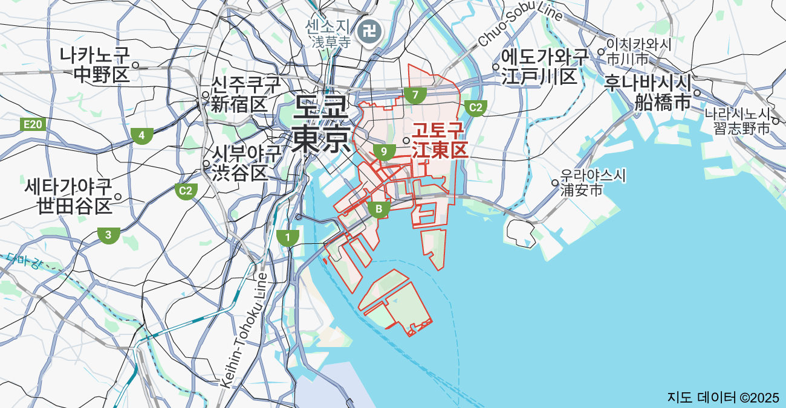오다이바
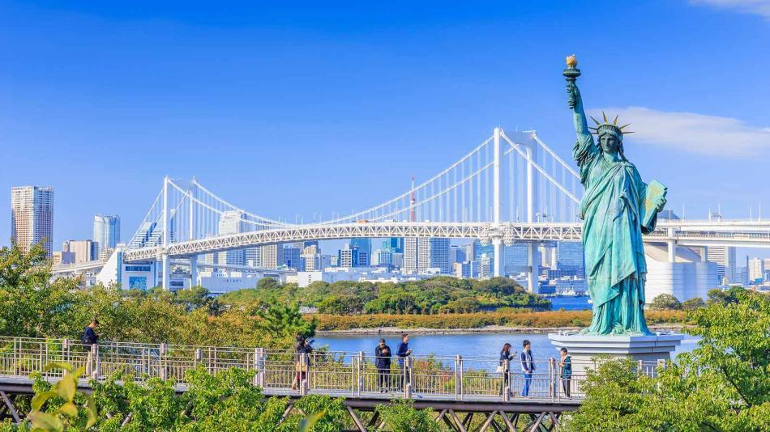- Daiba, Minato 135-0091 Tokyo Prefecture
- 다이버시티 영업시간: 11:00 ~ 20:00
레인보우 브리지로 연결되어 있는 오다이바는 도쿄만에 위치한 인공섬으로, 최첨단 엔터테인먼트의 중심지
팀랩 플래닛 도쿄
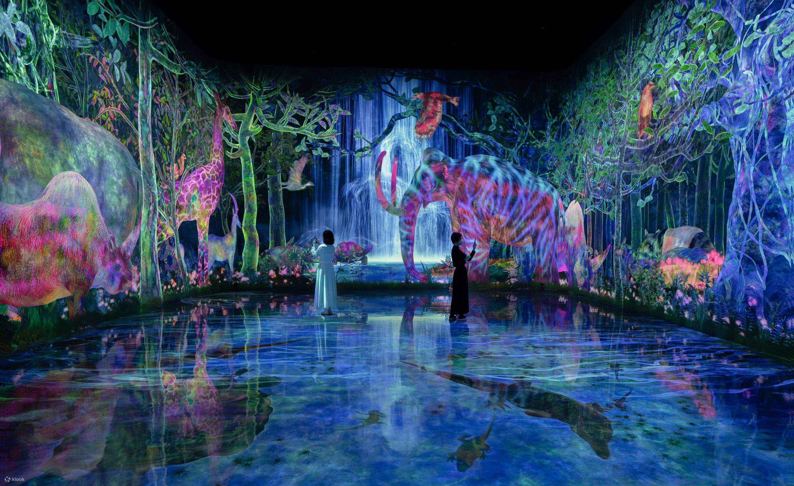- 6 Chome-1-16 Toyosu, Koto City, Tokyo 135-0061 일본
- 영업시간: 08:30 ~ 22:00
- 입장료: 35,000원
물과 빛을 이용하여 신비로움을 느낄 수 있는 디지털 아트 전시